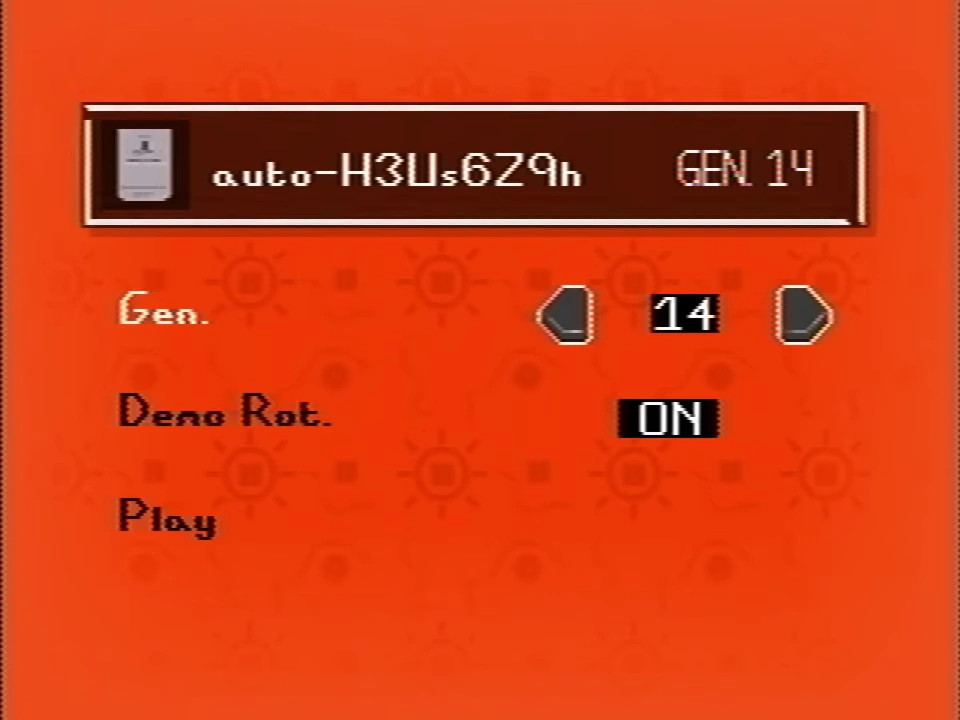
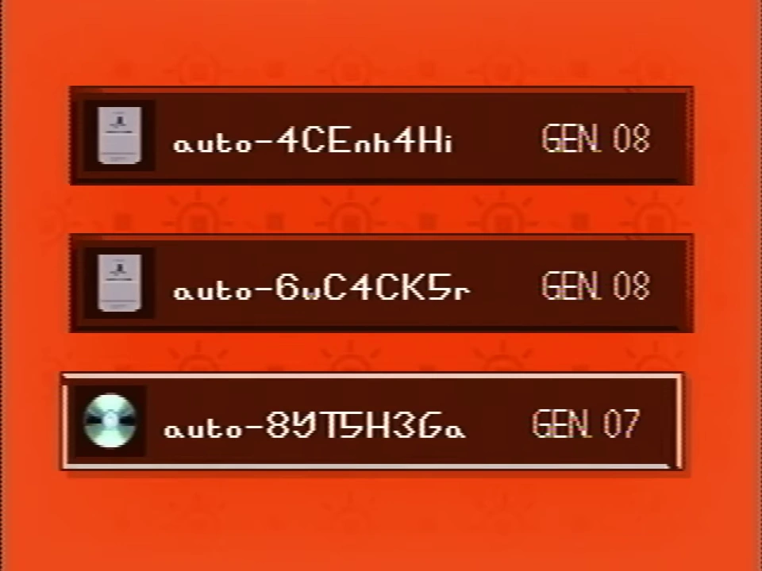
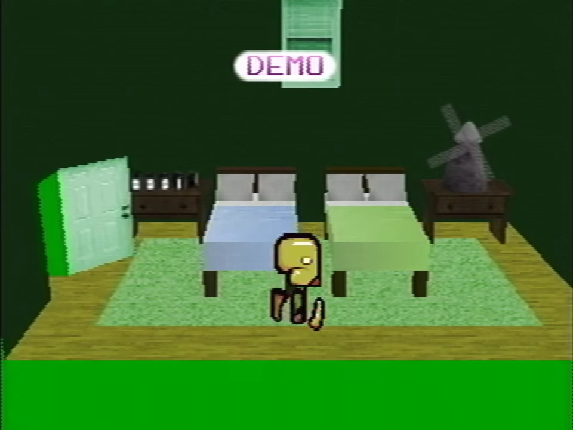

"auto-H3Us6Z9h" in the secret menu.
Recordings are saved inputs of Petscop gameplay that can be directly accessed through the secret menu under the "All Recordings" section, or played back either through demo playback when idling on the title screen or through Room Impulse.

All of the recordings below "auto-6wC4CK5r" are stored on the CD.
Many of the recordings shown in the All Recordings list appear to be automatically named and saved, although some of them appear to have been named manually. Starting with auto-6wC4Ck5r, the recordings are stored on the memory card instead of the CD. The listed recordings appear to have been created in three cycles, each starting with a gen 1 recording, and ending with a "family" recording in gen 15. The first two cycles are stored entirely on the CD, while the third and final cycle is stored partially on the CD, with the later recordings being stored on the memory card.
In the "All Recordings" section of the secret menu, all currently accessible recordings are listed and can be individually selected.
Upon selecting a recording, two variables and a play button can be seen; the first variable, "Gen." determines the gen that the recording will be played back within, while the second variable controls a property called "Demo Rot." which may be set to ON or OFF. "Demo Rot." presumably means "Demo Rotation", and is speculated to either mean to continue cycling to the next recording after the recording is finished, or to allow it to be played as a demo recording.
"Demos" are when recordings are automatically played back on the title screen. These recordings automatically play on the title screen after idling for an unknown period of time.
Demo playback of recordings is showcased on multiple occasions. Demos are first referenced by Paul in Petscop 6, where he refers to the game doing a "pre-recorded thing" when he leaves his console alone.[1] They are first shown in videos starting with Petscop 9. The game itself references that inputs get recorded, through the version of Even Care in the recording shown in Petscop 13.
When a demo is playing, a "DEMO" sign is on the screen that flashes every few seconds. This is usually at the top of the screen, but is moved to the bottom of the screen in certain areas, such as in front of the school or in Roneth's room. If the pause menu is opened during a demo recording, the message on the menu will be "Demo Recording". The "Quit Game" button does not appear in the pause menu in demo playback (except in Petscop 23).
Due to the nature of demo playbacks taking automatically recorded inputs, some demos contain synchronized events that can be matched up between episodes. While almost all instances of demo recordings are typically showing the same inputs regardless of location, the demo playback shown in Petscop 9 holds an exception where the timing of an action-button (Paul plucking the petals of the flower in Petscop 2) is used to control timing of directional movements (walking on the treadmill in Pen's room).
In some instances, as shown in the Petscop videos, the demo recordings play back in different gens than they were recorded in, changing without player input. This is used as an intended gameplay mechanic in some circumstances, making inputs that only function properly in demo playback (or possibly recording playback in general) to solve a puzzle. For example, making inputs that get recorded in a gen where the master bedroom door is closed in the house that completes certain tasks inside the master bedroom in a gen where the door is open (which is loaded during demo playback), is required to enter the garage for the first time and make progress.
Room Impulse is a form of recording playback.
Recordings are first shown in the videos at the beginning of Petscop 9 through demo playback. This demo follows a player in Odd Care, picking up pieces as they navigate from the upper entrance in the first room to the treadmill in Pen's room.
Petscop 11 contains two instances of demos, showing a different unknown player (see Pall) visiting the school. The first is shown after a cut from Paul's gameplay, and involves "driving" to the school in a cutscene, to interacting with Marvin using P2 to TALK, to entering the school and exploring the first floor, collecting pieces and interacting with the locker. The second demo (which may still be part of the first) shows the player, still on the first floor, entering a classroom to meet Marvin and play the Needles Piano.
Petscop 12 is entirely demo playback footage of Tiara, starting trapped in the right side of the Quitter's Room. Shortly into the video another player appears, replaying Paul's inputs from Petscop 10. Tiara's position is immediately forced to mirror the movements of the second player, and is stuck like this until the player leaves the room and they collide, letting her regain control as the second player disappears. On her own, she explores the hidden game area both under and on the Newmaker Plane collecting pieces as an unknown narrator talks to her through prior-left messages, calling her Belle. At one point, Marvin is encountered on top of the Newmaker Plane, replicating his movements from the first demo of Petscop 11 and freezing at the point that he would have entered the school.
Petscop 13 is also entirely footage of a demo playback, but it is the first instance of Paul's commentary being included. As he later explains in Petscop 14, the footage from this episode was originally lost, only retaining his commentary audio, but demo recordings played back his inputs on two separate occasions, allowing him to get the footage back. In the first demo, he is pushing the paint bucket in the house onto the road to catch a teal tool, then bringing the tool back to dismantle a device outside Care's room. In the second demo, he uses a bucket to catch Roneth for the first time, and see what happens when he catches all pets available in Even Care.

A demo recording of Marvin in the house
Petscop 14 has some independent demos, but also instances of demos being overlaid on past live gameplay, as Paul explores rooms of the house being different in demo recordings to record applicable inputs to solve puzzles specific to demo "versions" of the house (see gens) and showing his live gameplay vs. the demos. The video starts with a demo of Marvin exploring the master bedroom. Instances of demos in the rest of the video are of Paul experimenting to get the right inputs to solve a puzzle only possible when the door to the master bedroom is open, only available in the version of the house in the demo.
Petscop 15 is a full demo playback, showing the player from the demos shown in Petscop 11 now exploring the second floor of the school. They later enter a classroom, finding Marvin who tells them to wait as he leaves and brings back Tiara (who he calls Belle, but Tiara protests this). After Marvin leaves, Tiara teaches the player a code to access Draw Mode.
The "All Recordings" menu is first seen listed in Petscop 17 and first accessed in Petscop 19, where the current player scrolls through the entire list of saved recordings. Parts of the "sort-test", "mike2", "care", "belle", "james2", "phil", "amber2", and "belle3" recordings are shown in this episode.
Petscop 20 is a collection of manually played back recordings of Marvin playing Petscop in 1997. Parts of the "marvin", "auto-hZDK2lhq", "auto-cmhyVTZn", "auto-u401R6WJ", "auto-25JC8CNT", "auto-wnOHes3U", "auto-ugu8PsPt", and "auto-1lTWsbyV" recordings are shown in this episode.
Petscop 21 entirely consists of showing the contents of the "care-dancing-sign" recording.
The first part of Petscop 22 is the "auto-b4yw0bHt" recording, which is of Paul's gameplay from 2017 and is overlaid with his commentary. After this recording, the video shows a short clip of the tunnel cutscene through demo playback. Then, recordings of gameplay in the school are shown through Room Impulse playback.
Almost all of Petscop 23 is a long playback of a demo recording. The player visits and explores the third floor of the school, including a classroom showing representations of the 8 ghost rooms. Through interactions with Marvin and Tiara, the player gains the code for the locker. The player then enters and explores the school basement, catches Care B, and enters the machine room, encountering both Marvin and Tiara. Marvin forces the player to put Care B into the machine and play the Needles Piano, but the player appears to sabotage the procedure. After gaining an egg "pet", the player leaves the basement, puts the "Care" egg into the locker with the other egg, and leaves the school. After stopping in front of the bench, the Newmaker Plane's fog turns blue and the demo fades to white, automatically stopping with a loading screen before going back to the title screen.
This showcases the 248 recordings present in "All Recordings".
| Type | Name | Gen. | Demo Rot. | Episode | Notes |
|---|---|---|---|---|---|
| Card | family3 | 15 | Most recent recording as of Petscop 19 | ||
| Card | auto-zzT7QDqQ | 14 | |||
| Card | auto-H3Us6Z9h | 14 | ON | ||
| Card | auto-UxT2GzYz | 14 | |||
| Card | auto-DK0D3eVY | 14 | |||
| Card | auto-cmv5jLLV | 13 | |||
| Card | auto-Qc56sY1u | 12 | |||
| Card | auto-ocjeM7Lv | 12 | |||
| Card | auto-qgbIhwuC | 12 | |||
| Card | auto-Xjzj0L8l | 12 | |||
| Card | auto-623jAsfP | 12 | |||
| Card | auto-ssGFW4r4 | 12 | |||
| Card | auto-DrbvPStV | 12 | |||
| Card | auto-vT88m4Sj | 12 | |||
| Card | auto-YVIAhuLI | 12 | |||
| Card | auto-2qwn5iRu | 11 | |||
| Card | auto-t8S9ODTq | 11 | |||
| Card | auto-xj8pReth | 11 | |||
| Card | auto-YdJoRee9 | 10 | |||
| Card | auto-q8F8mAKC | 10 | |||
| Card | auto-PI5rnkRP | 10 | |||
| Card | auto-wQ5dgbCs | 10 | |||
| Card | auto-SifdmxBf | 10 | |||
| Card | auto-o5VHdVqx | 09 | |||
| Card | auto-Q2KONexY | 09 | |||
| Card | auto-b4yw0bHt | 08 | 22 | Playback of Paul gameplay taking place between Petscop 10 and Petscop 11 | |
| Card | auto-b96FmG2b | 08 | |||
| Card | auto-yABD1VvB | 08 | |||
| Card | auto-zgBPAYlN | 08 | |||
| Card | auto-UTeL2e3X | 08 | |||
| Card | auto-6kT0bK8O | 08 | |||
| Card | auto-dPvV7kym | 08 | |||
| Card | auto-7BwLsTqQ | 08 | |||
| Card | auto-Y8SsQjNS | 08 | |||
| Card | auto-AzU6BvrG | 08 | |||
| Card | auto-l4VuQtbb | 08 | |||
| Card | auto-4iTtPmvR | 08 | |||
| Card | auto-qEg59is8 | 08 | |||
| Card | auto-UGS4COgn | 08 | |||
| Card | auto-RG0dw17g | 08 | |||
| Card | auto-W6AjCNiS | 08 | |||
| Card | auto-9Z8dftSt | 08 | |||
| Card | auto-4CEnh4Hi | 08 | |||
| Card | auto-6wC4CK5r | 08 | |||
| CD | auto-8YT5H3Ga | 07 | |||
| CD | auto-BeI8xHoI | 07 | |||
| CD | auto-AGfpoQH8 | 07 | |||
| CD | auto-yELgzj1f | 06 | |||
| CD | auto-M6xZQxHc | 06 | |||
| CD | auto-vz8eQrSI | 06 | |||
| CD | auto-Fq75kNqp | 06 | |||
| CD | auto-XTk8rBtD | 06 | |||
| CD | auto-xUDgR2eH | 06 | |||
| CD | auto-0TnomCKG | 06 | |||
| CD | auto-m88qi7w3 | 06 | |||
| CD | auto-mbU1H7j2 | 06 | |||
| CD | auto-3jmVdQn3 | 06 | |||
| CD | auto-LZKrC6eW | 06 | |||
| CD | auto-40yOJtkx | 06 | |||
| CD | auto-z2vTAOIS | 06 | |||
| CD | auto-swmhrhJe | 06 | |||
| CD | auto-FYCoXEeZ | 06 | |||
| CD | auto-0C5DTnbg | 05 | |||
| CD | auto-40pzOX12 | 04 | |||
| CD | auto-XslWydxA | 04 | |||
| CD | auto-idltXbdh | 04 | |||
| CD | auto-UrLc4iwX | 04 | |||
| CD | auto-txHjNO9d | 04 | |||
| CD | auto-OayPv4u5 | 04 | |||
| CD | auto-G3Qr9wxz | 04 | |||
| CD | auto-t0ZqvzMN | 03 | |||
| CD | auto-GRADf8ii | 03 | |||
| CD | auto-4FCM3LMM | 03 | |||
| CD | auto-soMc4OKZ | 03 | |||
| CD | auto-07AC0OtB | 02 | |||
| CD | auto-9xakJQch | 02 | |||
| CD | auto-wrgGGbVz | 02 | |||
| CD | auto-o5fDoWjw | 02 | |||
| CD | auto-SQrdR9vo | 02 | |||
| CD | auto-7MlLTypC | 02 | |||
| CD | auto-iCjo4wro | 01 | |||
| CD | auto-gajNB97y | 01 | |||
| CD | auto-V2I3VP0D | 01 | |||
| CD | family2 | 15 | "The family" is a group mentioned numerous times by Rainer | ||
| CD | FUCK-FUCK-FUCK | 14 | |||
| CD | tiara | 13 | See Tiara. Might be related to events mentioned in Petscop 12 | ||
| CD | auto-hIvoO3oh | 12 | |||
| CD | auto-3ApLUEu9 | 12 | |||
| CD | auto-CIPzIMK6 | 11 | |||
| CD | auto-KW7Jz6FP | 11 | |||
| CD | auto-z55aczhp | 10 | |||
| CD | auto-ykrGKIRv | 09 | |||
| CD | auto-GeAqwlOF | 09 | |||
| CD | auto-Nzc5pwJ6 | 09 | |||
| CD | auto-NGY50jjY | 09 | |||
| CD | auto-nAiPZF9F | 08 | |||
| CD | auto-6BIhquS3 | 08 | |||
| CD | auto-9X6haO3c | 07 | |||
| CD | auto-WQLsMLVY | 07 | |||
| CD | auto-KTDUFL3c | 07 | |||
| CD | auto-YD3zSflY | 07 | |||
| CD | auto-0kwPjzb5 | 07 | |||
| CD | auto-d7zMOK21 | 07 | |||
| CD | auto-FwD4bA6g | 06 | |||
| CD | auto-GbXRSvWg | 05 | |||
| CD | auto-AzByJKk3 | 05 | |||
| CD | auto-KEOXxI9d | 05 | |||
| CD | auto-8wBJkf6R | 05 | |||
| CD | auto-YH3SKjrU | 05 | |||
| CD | auto-0uLp0ade | 04 | |||
| CD | auto-ofMoB94b | 04 | |||
| CD | auto-Wd3V7i2j | 04 | |||
| CD | auto-3r2F3Oyb | 04 | |||
| CD | auto-GwCT6Fd1 | 04 | |||
| CD | auto-wyMdyUzw | 04 | |||
| CD | auto-J6tliMtY | 04 | |||
| CD | auto-dcLA3hm5 | 03 | |||
| CD | auto-jOCGAQrV | 03 | |||
| CD | auto-p53gwnwk | 02 | |||
| CD | auto-FAwYbHBu | 02 | |||
| CD | auto-yvm8tOGO | 02 | |||
| CD | belle4 | 01 | |||
| CD | family | 15 | |||
| CD | auto-cJcqoCDh | 14 | |||
| CD | auto-jvZFCuUN | 14 | |||
| CD | auto-NqtkIbvY | 14 | |||
| CD | auto-rBF3mN1E | 14 | |||
| CD | auto-u8BeDgPB | 13 | |||
| CD | auto-tkFUFity | 13 | |||
| CD | auto-ULslD1UX | 13 | |||
| CD | auto-pdiEZh6X | 13 | |||
| CD | auto-UlQAE5hS | 13 | |||
| CD | auto-tfCwYCUy | 13 | |||
| CD | auto-fw30Y1dH | 13 | |||
| CD | auto-MGxFP4Ya | 13 | |||
| CD | auto-TfYVvHnE | 13 | |||
| CD | auto-J7KVTihI | 13 | |||
| CD | auto-7KqXBFMl | 13 | |||
| CD | auto-92xYHNhd | 13 | |||
| CD | auto-CvyFQj5D | 13 | |||
| CD | auto-nfHlbiOe | 13 | |||
| CD | auto-J1XRYteR | 13 | |||
| CD | auto-mpNea2CT | 12 | |||
| CD | auto-1wbaiBou | 11 | |||
| CD | auto-5cbvfSKN | 11 | |||
| CD | auto-lDnvPIVj | 10 | |||
| CD | auto-w3PE9mEb | 10 | |||
| CD | auto-uPMZrebl | 09 | |||
| CD | auto-83a8xHQh | 09 | |||
| CD | auto-1BaZaZW5 | 09 | |||
| CD | care-dancing-sign | 08 | 21 | Care shown running around signs in Even Care | |
| CD | auto-1lTWsbyV | 08 | 20 | Presumed to be Marvin, the player enters the underground area and observes numerous signs left by Rainer | |
| CD | auto-BO9pIztU | 07 | |||
| CD | auto-Iy7fAyxj | 07 | |||
| CD | auto-ugu8PsPt | 07 | 20 | Presumed to be Marvin, the player starts in the Newmaker Plane and is instructed by Rainer to "be more careful" to not get lost | |
| CD | auto-nq6fwc7W | 06 | |||
| CD | auto-ANhoju3x | 06 | |||
| CD | auto-Ncy4yYa2 | 06 | |||
| CD | auto-IP7CzIAb | 06 | |||
| CD | auto-wnOHes3U | 06 | 20 | Stands motionless in the Newmaker Plane | |
| CD | auto-25JC8CNT | 06 | 20 | Wanders in the Newmaker Plane | |
| CD | auto-u401R6WJ | 06 | 20 | Wanders in the Newmaker Plane | |
| CD | auto-cmhyVTZn | 06 | 20 | Wanders in the Newmaker Plane | |
| CD | auto-hZDK2lhq | 06 | 20 | Walks in a straight line in the Newmaker Plane | |
| CD | marvin | 06 | ON | 20 | Marvin starts a new file named "MVM". No Pieces present, he inputs the code to transport to the Newmaker Plane |
| CD | auto-Zp5h7Chu | 05 | |||
| CD | auto-ZMT4HADX | 05 | |||
| CD | will | 05 | |||
| CD | welles | 05 | |||
| CD | trevor | 05 | |||
| CD | tony | 05 | |||
| CD | theo | 05 | |||
| CD | shelby | 05 | |||
| CD | sarah | 05 | |||
| CD | sally | 05 | |||
| CD | ryan2 | 05 | |||
| CD | rebecca | 05 | |||
| CD | ramona | 05 | |||
| CD | phil2 | 05 | |||
| CD | peter | 05 | |||
| CD | nick | 05 | |||
| CD | nathan2 | 05 | |||
| CD | mike10 | 05 | See Michael Hammond | ||
| CD | melinda | 05 | |||
| CD | meghan2 | 05 | |||
| CD | mackenzie | 05 | |||
| CD | lucas3 | 05 | |||
| CD | laura | 05 | |||
| CD | larry | 05 | |||
| CD | kyle | 05 | |||
| CD | kate | 05 | |||
| CD | joel | 05 | |||
| CD | jessica | 05 | |||
| CD | james3 | 05 | |||
| CD | jack | 05 | |||
| CD | holland | 05 | |||
| CD | henry | 05 | |||
| CD | fatima | 05 | Only non-western name | ||
| CD | emily | 05 | |||
| CD | elly | 05 | |||
| CD | doug | 05 | |||
| CD | david | 05 | |||
| CD | daisy2 | 05 | |||
| CD | charlie | 05 | |||
| CD | ben | 05 | |||
| CD | belle3 | 05 | 19 | Belle shown catching Pen, and then greeted with a text similar to the end of Petscop 13 | |
| CD | april | 05 | |||
| CD | amber2 | 05 | 19 | Is perpetually locked in the cage in Amber's room, in Even Care | |
| CD | adam | 05 | |||
| CD | sean | 05 | |||
| CD | robbie3 | 05 | |||
| CD | mike9 | 05 | Ninth recording of Mike | ||
| CD | auto-GZrNigAz | 05 | |||
| CD | auto-aNFmNtGJ | 05 | |||
| CD | phil | 04 | 19 | Stands motionless in Roneth's room | |
| CD | nathan | 04 | |||
| CD | ryan | 04 | |||
| CD | meghan | 04 | |||
| CD | lucas2 | 04 | |||
| CD | james2 | 04 | 19 | Continuously goes back and forth in Amber's room | |
| CD | daisy | 04 | |||
| CD | belle2 | 04 | Second recording of Belle | ||
| CD | robbie2 | 04 | |||
| CD | mike8 | 04 | Eighth recording of Mike | ||
| CD | auto-lWteNvlx | 04 | |||
| CD | auto-gVTPDu0f | 04 | |||
| CD | auto-UpbtblzX | 03 | |||
| CD | belle | 03 | 19 | First recording of Belle | |
| CD | james | 03 | |||
| CD | amber | 03 | First recording of Amber | ||
| CD | auto-iu5VGqDQ | 03 | |||
| CD | lucas | 03 | |||
| CD | mike7 | 03 | Seventh recording of Mike | ||
| CD | robbie | 03 | |||
| CD | care | 03 | 19 | Care is shown running back and forth in Randice's room. Last file known to have a recognizable appearance to Petscop | |
| CD | mike6 | 03 | |||
| CD | auto-9jwWUfM8 | 02 | |||
| CD | auto-DNWQKkE7 | 02 | |||
| CD | auto-2iOktaqn | 02 | |||
| CD | auto-NnYxFBpF | 02 | |||
| CD | auto-NGO19om4 | 02 | |||
| CD | mike5 | 02 | |||
| CD | mike4 | 02 | |||
| CD | mike3 | 02 | |||
| CD | mike2 | 02 | OFF | 19 | Mike starts in a painting room and moves to Randice's room. There are no pets present, but an egg that he catches, which activates text. There are no walk cycles and animation is very crude |
| CD | mike | 02 | |||
| CD | test5 | 01 | |||
| CD | sort-test | 01 | OFF | 19 | No rooms, walk cycles or objectives, the guardian is moved across the screen, clipping through various objects with arrows on them |
{kind=link}
{kind=link}
{kind=link}
{kind=link}
{kind=link}
{kind=link}
{kind=link}
{kind=link}